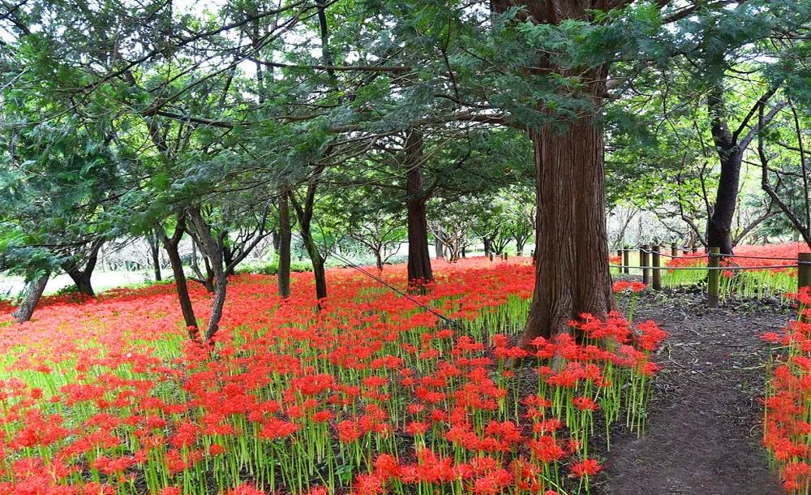
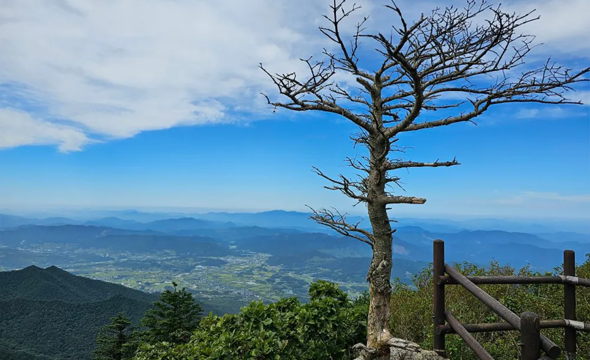

▲ 충남 공주 계룡산. 10월 초순은 능선에 운해가 깔리기 시작하는 시기다
추석 연휴가 짧다고 아쉬워할 일은 아닙니다. 열흘 뒤에 다시 연휴가 오고, 그다음 주에 한 번 더 옵니다.
2026년 10월에는 사흘 연휴가 두 번 있습니다. 개천절이 토요일과 겹친 덕분입니다.
1. 개천절이 토요일이면 생기는 일
개천절과 한글날은 대체공휴일 적용 대상입니다. 토요일 또는 일요일과 겹치면 다음 첫 번째 비공휴일이 대체공휴일이 됩니다.
2026년 개천절은 10월 3일 토요일입니다. 따라서 다음 평일인 10월 5일 월요일이 대체공휴일이 됩니다. 10월 4일은 일요일이므로 건너뜁니다.
| 날짜 | 요일 | 성격 |
|---|---|---|
| 10월 3일 | 토 | 개천절 |
| 10월 4일 | 일 | 주말 |
| 10월 5일 | 월 | 대체공휴일 |
2. 한글날은 금요일입니다
두 번째 연휴는 대체공휴일 없이 만들어집니다. 한글날 10월 9일이 금요일이기 때문입니다. 금·토·일이 그대로 이어져 사흘이 됩니다.
| 날짜 | 요일 | 성격 |
|---|---|---|
| 10월 9일 | 금 | 한글날 |
| 10월 10일 | 토 | 주말 |
| 10월 11일 | 일 | 주말 |
📍 연차 사흘의 값어치
두 연휴 사이의 평일은 10월 6일·7일·8일 사흘뿐입니다.
이 사흘에 연차를 쓰면 10월 3일부터 11일까지 아흐레가 이어집니다. 추석에서 같은 길이를 만들려면 연차 4일이 필요했습니다. 하루 덜 쓰고 같은 연휴를 만드는 구간입니다.

▲ 전북 정읍 내장산의 꽃무릇. 단풍보다 한참 앞서 9월 말에서 10월 초에 붉어진다 ⓒ 전북특별자치도 투어전북
3. 추석보다 나은 조건
같은 사흘이라도 성격이 다릅니다. 추석 연휴에는 여행 수요와 귀성 수요가 같은 도로에 겹칩니다. 10월 연휴에는 귀성 수요가 없습니다.
| 항목 | 추석(9/24~27) | 10월 연휴(3일씩 2회) |
|---|---|---|
| 귀성 수요 | 있음 | 없음 |
| 이동 방향 | 수도권 → 지방 집중 | 분산 |
| 숙박 경쟁 | 가족 방문으로 일부 대체 | 숙박 수요 집중 |
| 통행료 | 면제 시행 관례 | 정상 부과 |
| 단풍 | 대부분 이른 편 | 고지대에서 시작 |
다만 숙박은 10월 연휴가 더 어렵습니다. 추석에는 상당수가 본가에 머물지만, 10월 연휴에는 그 수요가 그대로 숙소로 몰리기 때문입니다.
4. 단풍과는 어긋납니다
10월 연휴에 단풍을 기대하면 대체로 이릅니다. 남부 산지의 절정은 두 연휴보다 늦게 오는 경우가 많습니다.
10월 초순에 볼 수 있는 것은 단풍이 아니라 고지대의 색 변화와 운해, 그리고 꽃무릇 같은 초가을 개화입니다. 붉게 물든 계곡을 기대하고 갔다가 초록만 보고 오는 일이 반복되는 이유입니다.

▲ 전북 무주 덕유산 능선. 고지대는 저지대보다 색이 먼저 바뀐다 ⓒ 전북특별자치도 투어전북
📍 고도를 기준으로 보세요
단풍은 날짜보다 고도를 따라 내려옵니다. 정상부에서 시작해 산 아래로 이동합니다.
10월 초·중순 연휴에는 능선과 정상부를 목적지로 잡는 편이 실패가 적습니다. 계곡과 진입로 단풍은 대체로 그보다 뒤입니다.
5. 두 연휴를 어떻게 나눌 것인가
연휴가 두 번이라는 점을 활용하면 목적지를 나눠 잡을 수 있습니다.
| 연휴 | 조건 | 적합한 목적지 |
|---|---|---|
| 10/3~10/5 | 단풍 이전, 축제 성수기 | 평야·유적·축제장 — 전북 김제 |
| 10/9~10/11 | 고지대 색 변화 시작 | 능선·전망 — 전북 무주, 충남 공주 |
첫 연휴인 10월 3일부터 5일은 김제지평선축제 기간(10월 1~5일)과 겹칩니다. 산 단풍이 아직 이른 대신, 들녘에서 열리는 축제가 정점에 있는 구간입니다.
▲ 전북 김제 벽골제. 첫 번째 연휴는 지평선축제 기간과 겹친다 ⓒ 전북특별자치도 투어전북
6. 확인해 둘 것
두 가지가 남아 있습니다.
첫째, 임시공휴일입니다. 정부가 추가로 지정하면 연휴 구조 자체가 바뀝니다. 특히 10월 6~8일 가운데 하루가 지정되면 아흐레 연휴가 연차 없이 만들어질 수 있습니다.
둘째, 산불조심기간입니다. 가을철 산불조심기간이 시작되면 국립공원 탐방로 일부가 통제됩니다. 10월 연휴는 아직 그 이전이지만, 11월 단풍 산행을 함께 계획한다면 통제 일정을 먼저 확인해야 합니다.